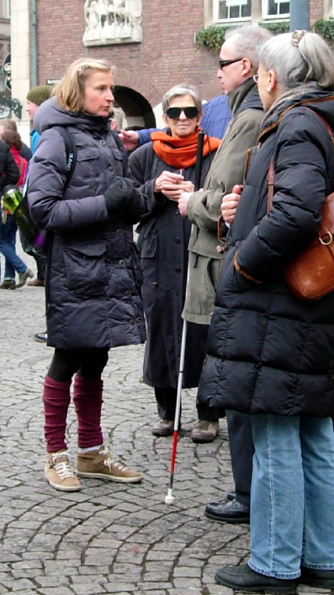
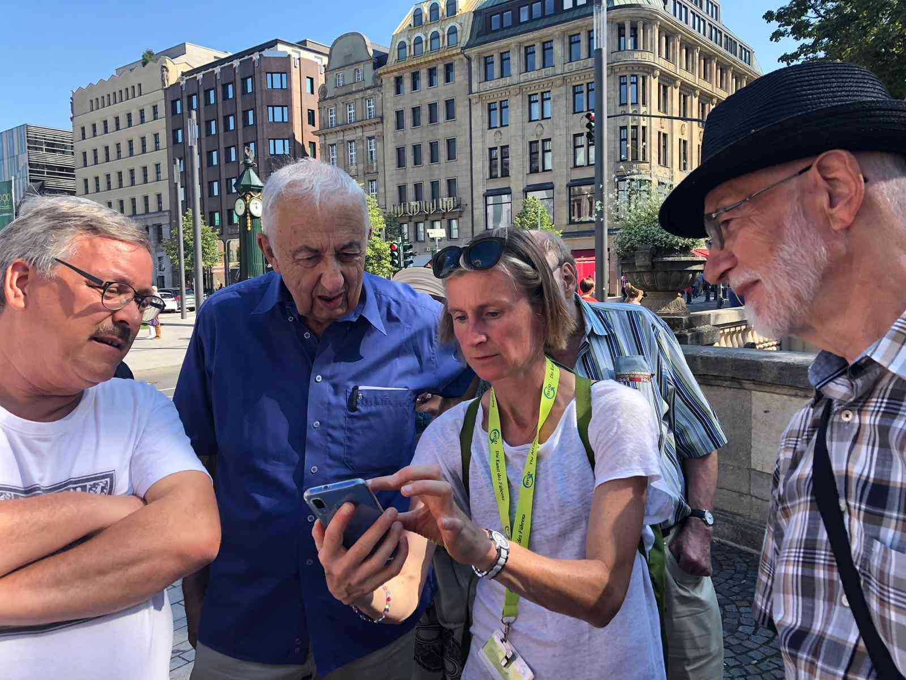
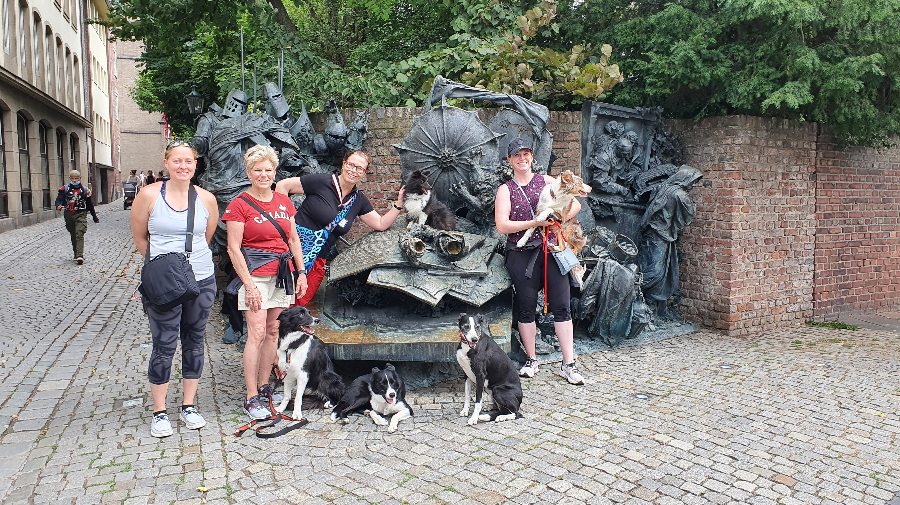
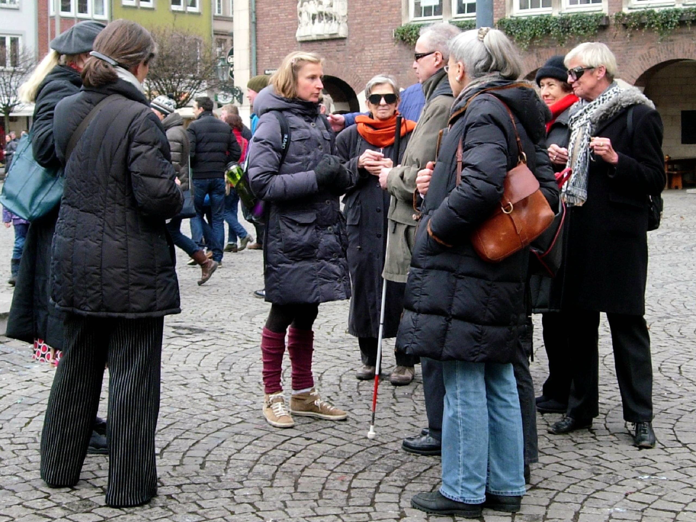
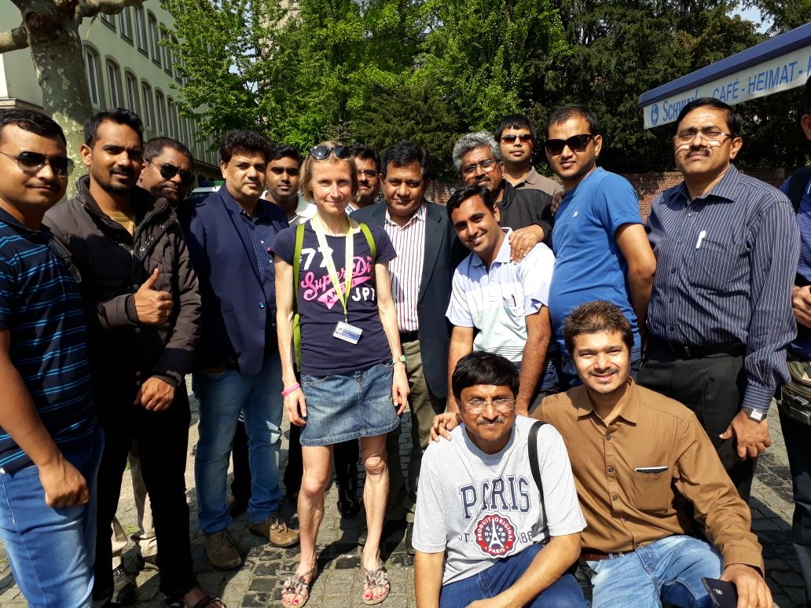

Unsere Themen
Familien & besondere Bedürfnisse
Für Schulklassen, für Rollstuhlfahrer*innen und Menschen mit Seheinschränkung, für Neu-Düsseldorfer*innen aus aller Welt: diese Führungen sind auf besondere Bedürfnisse zugeschnitten.





Für Schulklassen und Kinder
Spannende Führungen für junge Entdecker und Schulklassen.
mehr anzeigen
Ob Klassenausflug oder Familienwochenende: Diese Führungen machen Düsseldorf für Kinder und Jugendliche lebendig.
-

Düsseldorf für Schüler
Klassenausflug • Schulführung • Interaktiv
-

Kinder suchen den verschwundenen Kurhut
Mitmachführung • Rätsel • Für Kinder

Barrierefrei unterwegs
Führungen, die auf besondere Bedürfnisse eingehen.
mehr anzeigen
Düsseldorf entdecken – ganz gleich mit welchen Voraussetzungen. Diese Führungen sind speziell auf Rollstuhlfahrer*innen sowie blinde und sehbehinderte Menschen abgestimmt.
-

Barrierefrei: Altstadt für Rollstuhlfahrer*innen
Barrierefrei • Altstadt • Rollstuhlgerecht
-

Altstadt und Japanviertel für Blinde und Sehbehinderte
Ertasten • Erhören • Inklusiv

Führungen für Expats
Willkommen in Düsseldorf – auf Englisch und Französisch.
mehr anzeigen
Neu in der Stadt? Diese Führungen richten sich speziell an internationale Gäste und Neu-Düsseldorfer*innen.
-

Dusseldorf for Expats
English • Newcomers • City Introduction
-

Düsseldorf pour Expats
Français • Nouveaux arrivants • Découverte
Nicht das Richtige gefunden?
Gerne gestalten wir eine individuelle Führung nach Ihren Wünschen.